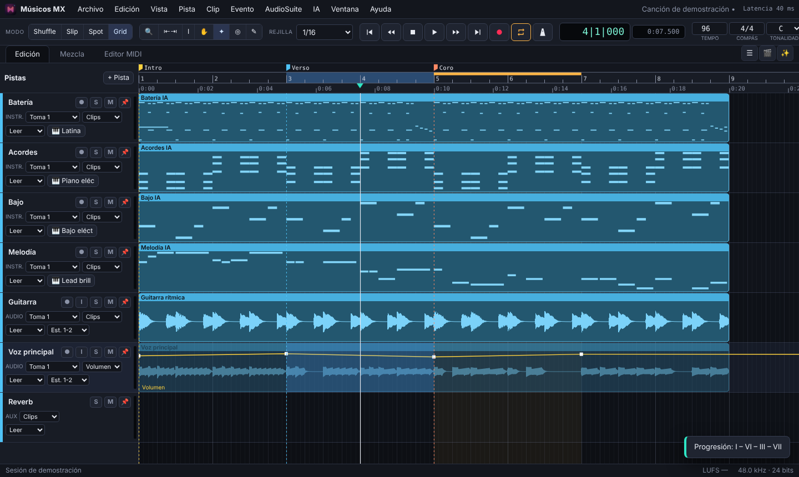
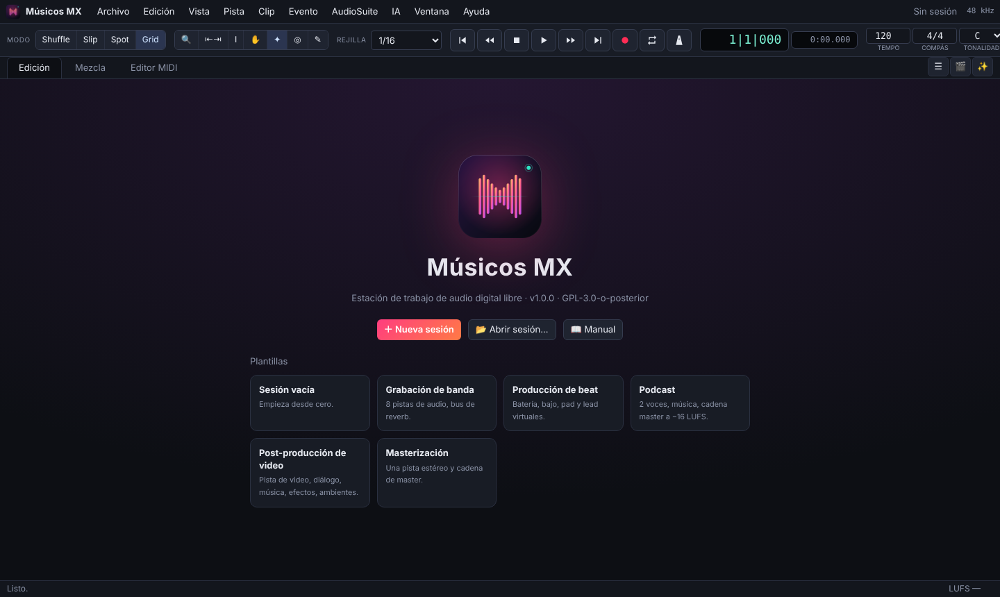
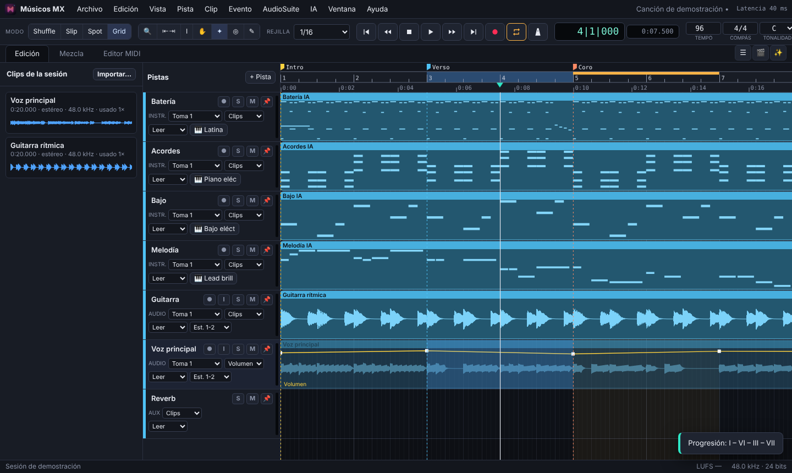
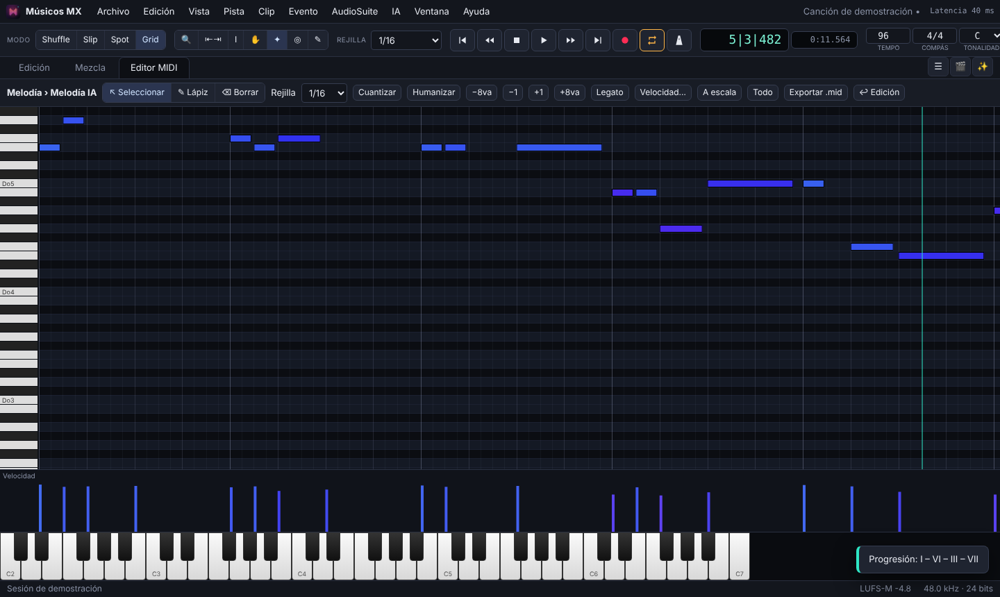
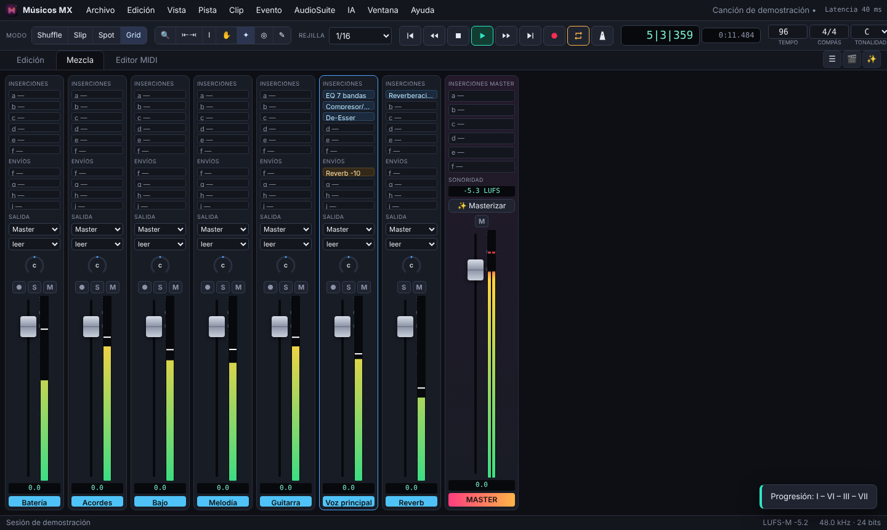
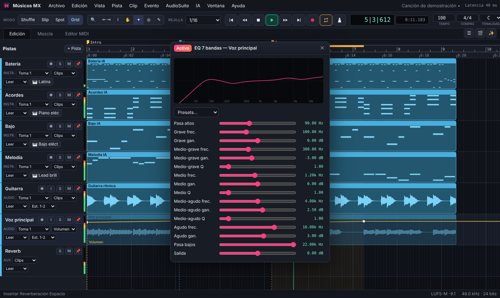
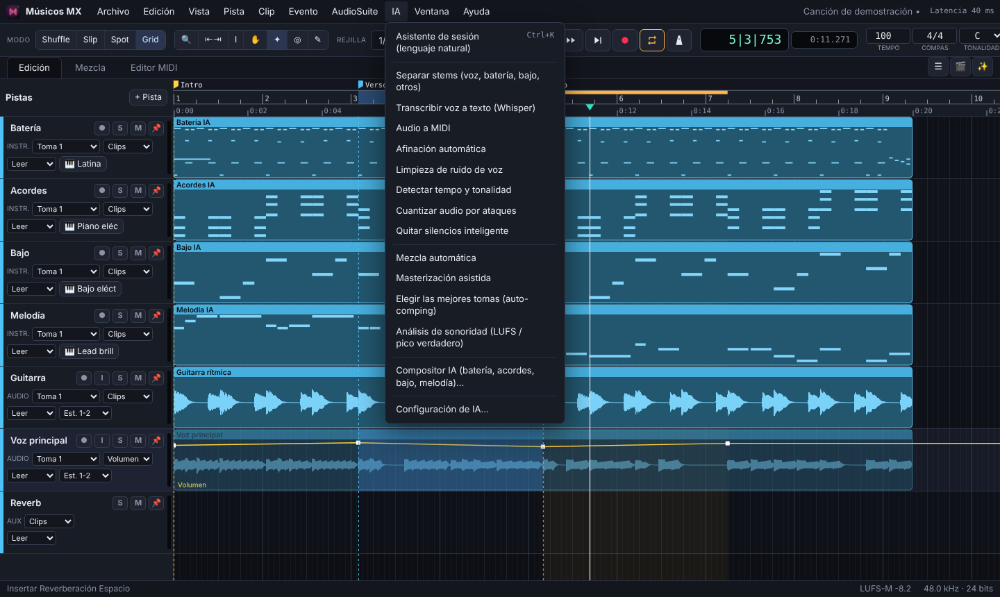
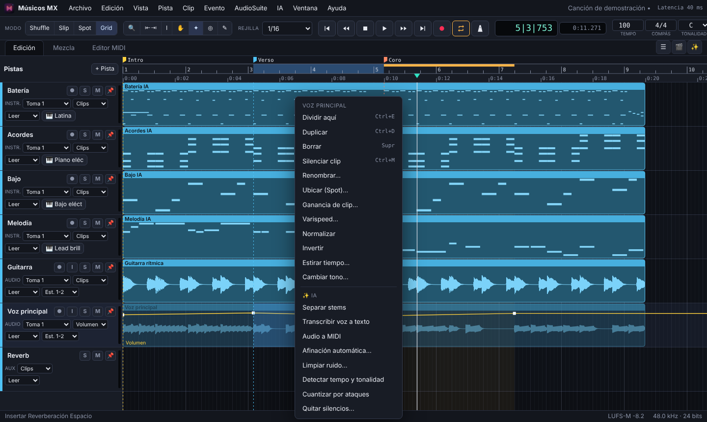
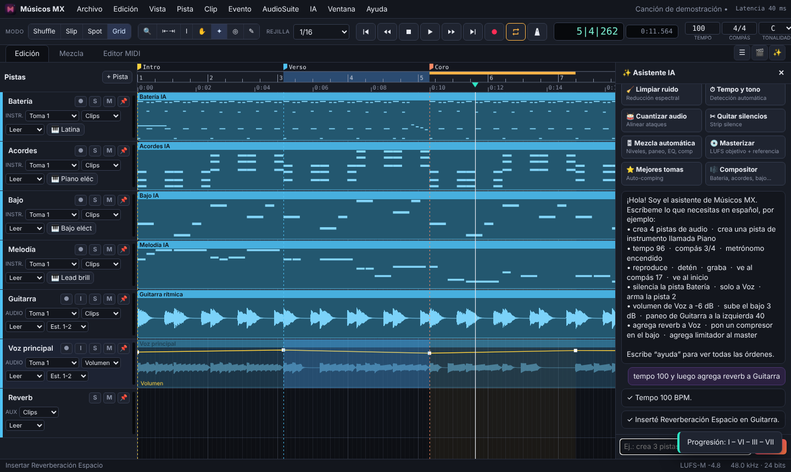
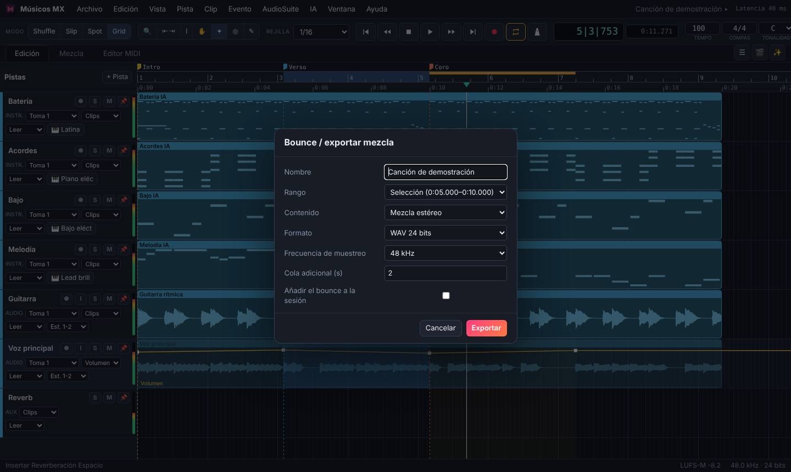

Manual del usuario de Músicos MX
Versión 1.0.0 · Estación de trabajo de audio digital libre con inteligencia artificial
Desarrollador: Santiago Miguel · Tel. 744 354 8848 · chago2850@gmail.com Licencia: GNU GPL versión 3 o posterior

1. Introducción
Músicos MX es una estación de trabajo de audio digital (DAW, por sus siglas en inglés) para grabar, editar, mezclar, masterizar y exportar música, podcasts y audio para video. Su flujo de trabajo se inspira en el de las estaciones profesionales que se usan en los estudios de grabación (ventana de Edición y ventana de Mezcla, modos de edición Shuffle/Slip/Spot/Grid, herramienta inteligente, listas de reproducción para tomas, AudioSuite, buses auxiliares, automatización, bounce de stems), y añade un conjunto de funciones de inteligencia artificial que se ejecutan en tu propio equipo para ahorrarte trabajo repetitivo.
1.1 Características principales
- Grabación multipista de audio con preconteo, metrónomo, punch in/out y grabación en bucle con tomas.
- Pistas de audio, de instrumento (sintetizador y baterías integradas), MIDI, buses auxiliares y video.
- Edición no destructiva: mover, recortar, dividir, fundidos, ganancia de clip, duplicar, copiar/pegar, consolidar, varispeed, quitar silencios, cuantizar.
- Editor MIDI (rollo de piano) con carril de velocidad, cuantización, humanización, transposición, ajuste a escala y teclado virtual.
- Mezclador con 6 inserciones y 4 envíos por canal, salidas a buses, paneo estéreo o 3D binaural, faders con medidores de pico y medidor de sonoridad LUFS en el master.
- 13 complementos (plugins) integrados: EQ de 7 bandas, compresor, limitador/maximizador, compuerta, de-esser, reverberación, retardo, coro/flanger, saturación, filtro, trémolo/auto-paneo, imagen estéreo y doblador de voz.
- Automatización de volumen y paneo con modos Leer, Touch, Latch y Escribir, y edición con lápiz.
- Procesos AudioSuite: normalizar (pico o LUFS), ganancia, invertir, polaridad, eliminar DC, silencio, estiramiento de tiempo sin cambiar el tono, cambio de tono sin cambiar la duración, reducción de ruido, afinación automática y render de inserciones.
- IA local: separación de stems, transcripción de voz a texto, audio a MIDI, afinación automática, limpieza de ruido, detección de tempo y tonalidad, cuantización de audio por ataques, mezcla automática, masterización asistida con referencia, selección automática de las mejores tomas, compositor de batería/acordes/bajo/melodía y un asistente que entiende órdenes en español.
- Exportación a WAV (16, 24 o 32 bits flotante) y MP3, stems por pista, fábrica de bounces (mezcla, instrumental, a cappella y stems en un solo ZIP) y archivos MIDI.
- Sincronización con video para post-producción y exportación de subtítulos SRT.
- Multiplataforma: Windows, macOS, Linux (.deb, .rpm, AppImage) y Android.
- 100 % software libre bajo GPL-3.0 o posterior: puedes usarlo, estudiarlo, modificarlo y compartirlo sin límites.
1.2 Si vienes de otra estación profesional
| Concepto habitual | En Músicos MX |
|---|---|
| Edit Window / Mix Window | Pestañas Edición y Mezcla (Ctrl+= alterna) |
| Shuffle / Slip / Spot / Grid | Mismos modos, teclas F1–F4 |
| Smart Tool, Trim, Selector, Grabber, Scrubber, Pencil, Zoomer | Barra de herramientas, teclas F5–F10 |
| Playlists / comping | Listas de reproducción (selector “Toma” en cada pista) y Elegir mejores tomas (IA) |
| Memory Locations | Marcadores (Ctrl+5) |
| AudioSuite | Menú AudioSuite |
| Clip Gain | Ganancia de clip (Ctrl+Shift+↑/↓) |
| Strip Silence | Quitar silencios (Ctrl+U) |
| Elastic Audio / Varispeed | Varispeed y AudioSuite › Compresión/Expansión de tiempo |
| Beat Detective | IA › Cuantizar audio por ataques |
| Bounce Mix / Bounce Factory | Exportar / Bounce (Ctrl+Alt+B) y Fábrica de bounces |
| Track Freeze / Commit | Pista › Congelar / Commit |
| Track Pin | Fijar arriba (botón 📌) |
| Speech-to-Text | IA › Transcribir voz a texto (Whisper) |
| Stem Separator | IA › Separar stems |
| Macros / asistente de sesión | Asistente IA (Ctrl+K) |
Músicos MX es un proyecto independiente. No está afiliado ni respaldado por Avid Technology; los nombres de productos de terceros se mencionan solo como referencia.
1.3 Requisitos del sistema
| Sistema | Mínimo | Recomendado |
|---|---|---|
| Windows | Windows 10 de 64 bits, 4 GB de RAM | Windows 11, 8 GB de RAM o más, interfaz de audio |
| macOS | macOS 11 Big Sur (Intel o Apple Silicon) | macOS 13 o posterior, 8 GB de RAM |
| Linux | Distribución de 64 bits con PulseAudio o PipeWire | Ubuntu 22.04+/Fedora 38+, PipeWire |
| Android | Android 7.0 con WebView actualizado, 3 GB de RAM | Android 11+, tableta, audífonos |
Para la transcripción de voz se necesita Internet solo la primera vez (descarga del modelo libre Whisper, de 40 a 250 MB según el tamaño elegido).
2. Instalación
Descarga el instalador de tu sistema desde la sección Releases del repositorio Musicos-MX en GitHub.
2.1 Windows
- Ejecuta
Musicos-MX-Setup-1.0.0.exe. - Elige la carpeta de instalación (o deja la predeterminada) y pulsa Instalar.
- Se crean accesos directos en el escritorio y en el menú Inicio.
- Si Windows SmartScreen muestra un aviso (“Windows protegió su PC”), pulsa Más información › Ejecutar de todas formas: el aviso aparece porque el instalador no está firmado con un certificado comercial.
También existe una versión portable (Musicos-MX-1.0.0-portable.exe) que no requiere instalación.
2.2 macOS
- Abre
Musicos-MX-1.0.0-mac-<arquitectura>.dmg(arm64 para Apple Silicon M1/M2/M3/M4/M5, x64 para Intel) o descomprime el.zip. - Arrastra Músicos MX a la carpeta Aplicaciones.
- La primera vez, haz clic derecho › Abrir y confirma (la app no está notarizada por Apple). Si macOS indica que “está dañada”, ejecuta en Terminal:
xattr -cr "/Applications/Músicos MX.app". - Al grabar por primera vez, autoriza el acceso al micrófono en Ajustes del Sistema › Privacidad y seguridad › Micrófono.
2.3 Linux
- Debian, Ubuntu, Linux Mint, Pop!_OS (
.deb):sudo apt install ./musicos-mx_1.0.0_amd64.deb - Fedora, openSUSE, RHEL, Rocky (
.rpm):sudo dnf install ./musicos-mx-1.0.0.x86_64.rpm(osudo zypper install ...) - Cualquier distribución (AppImage):
chmod +x Musicos-MX-1.0.0.AppImage && ./Musicos-MX-1.0.0.AppImage
La aplicación aparece en el menú de aplicaciones dentro de la categoría Sonido y video.
2.4 Android
- Copia
Musicos-MX-1.0.0.apkal teléfono o tableta y ábrelo. - Si el sistema lo pide, permite instalar apps de origen desconocido para tu gestor de archivos o navegador.
- Al grabar por primera vez, concede el permiso de micrófono.
- Los archivos exportados se guardan en la carpeta Descargas/MusicosMX.
2.5 Primer inicio

Al abrir Músicos MX aparece la pantalla de bienvenida con:
- Nueva sesión: crea una sesión vacía eligiendo nombre, frecuencia de muestreo (44.1, 48, 88.2 o 96 kHz), profundidad de bits de exportación, tempo y compás.
- Abrir sesión: abre un archivo
.mmxs. - Recuperar autoguardado: aparece si hay una copia automática de la última sesión.
- Plantillas: Sesión vacía, Grabación de banda, Producción de beat, Podcast, Post-producción de video y Masterización.
3. Conceptos básicos
- Sesión: tu proyecto. Contiene pistas, clips, mezcla, marcadores, tempo y todo el audio. Se guarda como un único archivo
.mmxs(un ZIP con el audio en WAV de 32 bits flotante y la descripción de la sesión en JSON), fácil de respaldar o compartir. - Pista: un carril horizontal en la ventana de Edición y un canal en la ventana de Mezcla. Tipos: Audio, Instrumento (genera sonido a partir de notas MIDI), MIDI, Auxiliar (bus para efectos compartidos o submezclas) y Video.
- Clip: un fragmento de audio o de notas MIDI colocado en una pista. Editar un clip nunca modifica el archivo original (edición no destructiva).
- Lista de reproducción (toma): cada pista puede tener varias versiones de su contenido. Útil para grabar varias tomas y elegir la mejor.
- Inserción: un efecto colocado en serie en un canal (EQ, compresor, etc.).
- Envío: una copia de la señal enviada a un bus auxiliar (p. ej. una reverberación compartida).
- Bounce / exportar: convertir la sesión (o parte) en un archivo de audio.
4. La interfaz
4.1 Barra de menús
Archivo, Edición, Vista, Pista, Clip, Evento, AudioSuite, IA, Ventana y Ayuda. A la derecha se muestran el nombre de la sesión (un punto • indica cambios sin guardar) y la latencia de salida.
4.2 Barra de herramientas
De izquierda a derecha:
- Modos de edición: Shuffle, Slip, Spot, Grid (F1–F4).
- Herramientas: Zoom 🔍, Recorte ⇤⇥, Selector I, Mano ✋, Inteligente ✦, Scrub ◎, Lápiz ✎ (F5–F10).
- Rejilla: valor de la cuadrícula (1 compás, 1/2, 1/4, 1/8, 1/16, 1/32 y tresillos).
- Transporte: volver al inicio, retroceder un compás, detener, reproducir, avanzar un compás, ir al final, grabar, bucle y metrónomo.
- Contadores: el principal (clic para alternar entre Compases|Tiempos|Ticks, Min:Seg, Código de tiempo y Muestras) y el secundario.
- Tempo, compás, tonalidad y preconteo (0, 1 o 2 compases antes de grabar).
- Zoom: alejar, acercar, ajustar sesión a la ventana.
4.3 Pestañas y paneles
- Edición: línea de tiempo con pistas y clips.
- Mezcla: consola de canales.
- Editor MIDI: rollo de piano.
- Botón ☰: Navegador de clips (lado izquierdo).
- Botón 🎬: ventana de video.
- Botón ✨: Asistente de IA (lado derecho).
4.4 Barra de estado
Muestra la última acción, el rango seleccionado, la sonoridad momentánea LUFS-M del master durante la reproducción y el formato de la sesión.
5. Sesiones
5.1 Crear
Archivo › Nueva sesión (Ctrl+N) o desde la bienvenida. Recomendaciones: 48 kHz para video y uso general, 44.1 kHz si el destino final es CD, 96 kHz solo si lo necesitas (ocupa el doble de espacio).
5.2 Guardar
Archivo › Guardar (Ctrl+S) y Guardar como (Ctrl+Shift+S). En escritorio se abre el diálogo del sistema; en Android se guarda en Descargas/MusicosMX.
5.3 Abrir
Archivo › Abrir sesión (Ctrl+O) o haz doble clic sobre un archivo .mmxs en tu explorador de archivos (asociación creada por el instalador).
5.4 Autoguardado
Cada 90 segundos, si hay cambios, la sesión se copia en el almacenamiento interno de la aplicación. Si el programa se cierra inesperadamente, usa Recuperar autoguardado en la pantalla de bienvenida. Puedes desactivarlo en Preferencias.
5.5 Historial
Todas las acciones se pueden deshacer (Ctrl+Z) y rehacer (Ctrl+Shift+Z), hasta 200 pasos. Ventana › Historial de deshacer muestra la lista; haz clic en una acción para volver a ese punto.
6. Pistas
6.1 Crear pistas
Pista › Nuevas pistas (Ctrl+Shift+N) o el botón + Pista. Indica cantidad, tipo, formato (mono/estéreo), nombre e instrumento. Las pistas nuevas se insertan debajo de la pista seleccionada.
6.2 Encabezado de pista
- Nombre (editable directamente).
- ● Grabar: arma la pista para grabación.
- I (solo audio): monitorización de entrada; escuchas lo que entra por el micrófono a través de los efectos de la pista.
- S Solo (Shift+clic: solo exclusivo) y M Silencio.
- 📌 Fijar: mantiene la pista en la parte superior de la lista (útil en sesiones grandes).
- Toma: selector de lista de reproducción (+ Nueva vacía, + Duplicar).
- Vista: Clips, Volumen o Paneo (para ver y editar la automatización).
- Modo de automatización: off, Leer, Touch, Latch, Escribir.
- Entrada (audio): Entrada 1, Entrada 2 o Estéreo 1-2. En pistas de instrumento, botón 🎹 para elegir el sonido.
- Medidor de nivel a la derecha.
- Arrastra el borde inferior para cambiar la altura.
Clic derecho sobre el encabezado: renombrar, color, duplicar, eliminar, activar/desactivar, ocultar, fijar, congelar/commit, listas de reproducción, mejores tomas (IA), instrumento, compositor IA, panoramizador 3D y limpiar automatización.
6.3 Congelar / Commit
Pista › Congelar / Commit renderiza la pista con todos sus efectos a una nueva pista de audio y desactiva la original (que puedes reactivar). Ahorra procesador y fija el sonido de instrumentos virtuales.
6.4 Pistas inactivas y ocultas
Una pista inactiva no suena ni consume recursos. Una pista oculta desaparece de la vista pero sigue sonando. Pista › Mostrar todas las pistas las vuelve a mostrar.
7. Grabación
7.1 Preparación
- Conecta tu micrófono o interfaz de audio.
- En Archivo › Preferencias elige el dispositivo de entrada.
- Crea una pista de audio (mono para un micrófono, estéreo para fuentes estéreo) y elige su Entrada.
- Pulsa ● en la pista para armarla. La primera vez se pedirá permiso de micrófono.
- Activa I si deseas escucharte (usa audífonos para evitar acoples).
7.2 Grabar
- Coloca el cabezal donde quieras empezar y pulsa Grabar (Ctrl+Espacio, F12 o el botón rojo). Pulsa Espacio o Detener para terminar.
- Preconteo: elige 1 o 2 compases en la barra de herramientas; el metrónomo sonará antes de empezar.
- Metrónomo: botón con forma de metrónomo o tecla C. Su volumen se ajusta en Preferencias.
- Puedes armar varias pistas a la vez (cada una toma su entrada).
- Las pistas de instrumento armadas graban lo que toques en un teclado MIDI USB o en el teclado virtual del Editor MIDI.
7.3 Punch in/out
Selecciona un rango con el Selector y elige Evento › Punch in/out = selección. Al grabar, la reproducción empieza 2 segundos antes y solo se conserva el audio dentro del rango (ideal para corregir una frase).
7.4 Grabación en bucle con tomas
Activa el bucle (tecla L) sobre la sección y graba. Cada pasada se guarda como una lista de reproducción nueva (“Toma 2”, “Toma 3”…). Cámbialas desde el selector Toma o deja que la IA elija lo mejor de cada una (IA › Elegir las mejores tomas).
7.5 Latencia
Músicos MX compensa automáticamente la latencia informada por el sistema. Si notas que lo grabado queda ligeramente desfasado, ajusta Compensación de latencia extra (muestras) en Preferencias (48 muestras = 1 ms a 48 kHz).
8. Edición
8.1 Modos de edición
- Shuffle (F1): los clips se pegan a sus vecinos; al borrar o recortar, el material posterior se desplaza para cerrar el hueco.
- Slip (F2): movimiento libre, sin ajuste.
- Spot (F3): al hacer clic en un clip con la herramienta Mano, se abre un diálogo para escribir su posición exacta (min:seg o compás|tiempo).
- Grid (F4): todo se ajusta a la rejilla elegida.
8.2 Herramientas
- Zoom (F5): clic para acercar, Alt+clic para alejar.
- Recorte (F6): arrastra el borde de un clip para alargarlo o acortarlo.
- Selector (F7): arrastra para seleccionar un rango de tiempo en una o varias pistas; clic para colocar el cursor.
- Mano (F8): mueve clips (también entre pistas compatibles). Alt+arrastrar duplica.
- Inteligente (✦): combina todas: mitad superior del clip = Selector, mitad inferior = Mano, bordes = Recorte, esquinas superiores = fundidos.
- Scrub (F9): arrastra sobre un clip para escuchar el audio a la velocidad del ratón.
- Lápiz (F10): dibuja automatización, crea clips MIDI en pistas de instrumento y abre el Editor MIDI.
8.3 Navegar
- Clic en la regla para mover el cabezal; arrastra en la franja dorada superior para definir el bucle; doble clic crea un marcador.
- Ctrl+rueda: zoom horizontal. Alt+rueda: aumenta la altura de las formas de onda. T / R: acercar/alejar. Alt+A: ver toda la sesión.
- Flechas ←/→ mueven el cabezal un tiempo; ↑/↓ cambian de pista seleccionada.
- F: activa o desactiva que la vista siga al cabezal.
8.4 Operaciones con clips
| Acción | Cómo |
|---|---|
| Dividir | Ctrl+E o B en la posición del cabezal (o en los bordes de la selección) |
| Duplicar | Ctrl+D |
| Cortar / Copiar / Pegar | Ctrl+X / Ctrl+C / Ctrl+V (se pega en el cabezal, en la pista seleccionada) |
| Borrar | Supr. Con un rango seleccionado borra solo ese rango |
| Recortar a la selección | Ctrl+T |
| Fundidos | Arrastra las esquinas superiores del clip, o selecciona sobre el borde y pulsa Ctrl+F |
| Ganancia de clip | Ctrl+Shift+↑/↓ (±1 dB) o clic derecho › Ganancia de clip |
| Silenciar clip | Ctrl+M |
| Desplazar (nudge) | + / − mueven los clips seleccionados un valor de rejilla |
| Cuantizar clips | Edición › Cuantizar inicio de clips a la rejilla |
| Consolidar | Edición › Consolidar clip: une todo lo seleccionado en un solo archivo |
| Varispeed | Clic derecho › Varispeed: cambia velocidad y tono como una cinta |
| Quitar silencios | Ctrl+U: divide el clip y elimina las partes en silencio |
8.5 Marcadores
Enter del teclado numérico o doble clic en la regla crea un marcador. Ventana › Marcadores (Ctrl+5) permite renombrarlos, saltar a ellos y borrarlos. También puedes crearlos automáticamente desde una transcripción.
8.6 Bucle
Botón de bucle o tecla L. Si hay un rango seleccionado al activarlo, se usa como región de bucle. Ctrl+Shift+L convierte la selección en bucle.
8.7 Navegador de clips

El botón ☰ abre la lista de todo el audio de la sesión. Arrastra un elemento a una pista para colocarlo; doble clic para escucharlo. Importar… añade archivos a la lista sin colocarlos.
8.8 Importar
Archivo › Importar audio (Ctrl+Shift+I) o arrastra archivos desde tu explorador a la línea de tiempo. Formatos: WAV, AIFF, MP3, FLAC, OGG, Opus, M4A/AAC y el audio de archivos de video. Los archivos MIDI (.mid) crean pistas de instrumento con sus notas.
9. Editor MIDI e instrumentos

9.1 Abrir
Doble clic en un clip MIDI, o con la herramienta Lápiz haz clic en una pista de instrumento para crear un clip de un compás.
9.2 Editar notas
- Seleccionar: clic en una nota; arrastrar en vacío dibuja un rectángulo de selección; Shift añade a la selección.
- Arrastra una nota para moverla (tiempo y tono); arrastra su borde derecho para cambiar la duración.
- Lápiz: clic en vacío crea una nota del tamaño de la rejilla. Doble clic (con Seleccionar) crea o borra notas.
- Borrar: clic sobre la nota, o Supr con notas seleccionadas.
- Carril de velocidad (abajo): arrastra para cambiar la fuerza de las notas.
- Botones: Cuantizar, Humanizar (pequeñas variaciones naturales), −8va / −1 / +1 / +8va, Legato, Velocidad…, A escala (corrige notas fuera de la tonalidad de la sesión), Todo, Exportar .mid.
- Ctrl+rueda zoom horizontal; rueda desplaza en vertical; Shift+rueda en horizontal.
9.3 Teclado virtual
Toca con el ratón/dedo el teclado inferior o con tu teclado de computadora: A W S E D F T G Y H U J K O L P (una octava y media). Z / X bajan o suben la octava. Si la pista está armada y estás grabando, las notas se registran.
9.4 Instrumentos integrados
Botón 🎹 del encabezado o Pista › Instrumento:
- Sintetizador: Piano eléctrico, Piano de cola, Pad cálido, Bajo sintético, Bajo eléctrico, Lead brillante, Órgano, Cuerdas, Metales, Marimba, Campanas, Acordeón y Guitarra pulsada. Ajustes de brillo, ataque, liberación y desafinación.
- Batería: kits Acústica, Electrónica 808 y Latina (incluye congas, bongós, güiro, maracas, claves, cencerro y wood block), con el mapa General MIDI (36 bombo, 38 tarola, 42 hi-hat cerrado, 46 abierto, 49 crash, 51 ride…).
9.5 Teclados MIDI externos
Conecta un controlador USB: Músicos MX lo detecta automáticamente y toca la pista de instrumento armada (o la seleccionada).
10. Mezcla

10.1 El canal
De arriba hacia abajo: Inserciones (a–f), Envíos (f–i), Salida (Master o un bus auxiliar), modo de automatización, paneo (arrastra arriba/abajo; doble clic centra), botones ● S M, fader con escala en dB y medidor de pico con retención, valor en dB y nombre (doble clic para renombrar).
- Fader: arrastra; Ctrl+arrastrar para ajuste fino; rueda del ratón ±0.5 dB; doble clic = 0 dB.
- El canal Master muestra la sonoridad momentánea (LUFS), el botón ✨ Masterizar y sus propias inserciones.
10.2 Inserciones
Clic en una ranura vacía para elegir un complemento. Clic en una ocupada para abrir su ventana. Clic derecho: abrir, omitir (bypass), subir, bajar o quitar.
10.3 Envíos y buses auxiliares
Clic en una ranura de envío para elegir el bus de destino o crear uno nuevo ya configurado con Reverb o Delay. Con la rueda del ratón sobre el envío ajustas su nivel. Clic de nuevo para cambiar a pre-fader, editar el nivel o quitarlo.
10.4 Panoramizador 3D binaural
Pista › Panoramizador 3D / binaural sustituye el paneo estéreo por un posicionador espacial con HRTF: arrastra el punto alrededor del oyente y ajusta la altura. Escucha con audífonos para percibir delante, detrás, arriba y abajo.
10.5 Automatización
- Elige el modo en el canal o en el encabezado: Leer reproduce la automatización; Escribir graba todos los movimientos durante la reproducción; Touch graba solo mientras mueves el control; Latch graba desde que lo tocas hasta que detienes.
- Para editar a mano, cambia la Vista de la pista a Volumen o Paneo: clic sobre la línea añade un punto, arrastra para moverlo, Alt+clic lo borra y con el Lápiz puedes dibujar curvas libres.
- Pista › Limpiar automatización borra todos los puntos.
11. Complementos incluidos

Todos tienen presets de fábrica (cuando aplica), botón Activo/Omitido y deslizadores (doble clic restablece el valor). Los cambios suenan en tiempo real.
| Complemento | Para qué sirve | Parámetros |
|---|---|---|
| EQ 7 bandas | Esculpir el timbre; muestra la curva de respuesta | Pasa altos, grave (shelf), 3 paramétricos (frecuencia, ganancia, Q), agudo (shelf), pasa bajos, salida |
| Compresor/Limitador Dyn | Controlar la dinámica | Umbral, proporción, ataque, liberación, rodilla, ganancia de compensación, mezcla paralela; medidor de reducción |
| Maximizador/Limitador | Subir la sonoridad sin superar un techo | Ganancia de entrada, techo, liberación |
| Compuerta de ruido | Cerrar el canal entre frases o golpes | Umbral, rango, ataque, retención, liberación |
| De-Esser | Suavizar las “s” y “ch” agresivas | Frecuencia, umbral, reducción máxima |
| Reverberación Espacio | Ambiente de sala, salón, placa o catedral | Tamaño, caída, pre-retardo, amortiguación, mezcla |
| Retardo Mod | Ecos libres o sincronizados al tempo, ping-pong | Tiempo, sincronía (1/4, 1/8…), realimentación, cortes de graves/agudos, mezcla, ping-pong |
| Coro/Flanger | Engrosar y mover el sonido | Velocidad, profundidad, retardo base, realimentación, mezcla |
| Saturación Cinta/Válvula | Calidez y armónicos | Impulso, tipo, tono, salida, mezcla |
| Filtro Barrido | Filtros pasa bajos/altos/banda con LFO | Tipo, corte, resonancia, velocidad y profundidad del LFO |
| Trémolo/Auto-paneo | Modulación de volumen o de posición | Velocidad, profundidad, modo |
| Imagen estéreo | Ancho estéreo, mono, fase | Anchura, ganancia, invertir fase izquierda, mono |
| Desafinador/Doblador | Doblaje artificial de voces (ADT) | Desafinación, retardo, mezcla |
12. AudioSuite (procesamiento fuera de línea)
Selecciona uno o varios clips (o un rango con el Selector; se dividirá en sus bordes) y elige un proceso del menú AudioSuite. Se crea un archivo nuevo; el original permanece en el Navegador de clips y la operación se puede deshacer.
| Proceso | Descripción |
|---|---|
| Normalizar | Lleva el pico a un nivel (p. ej. −1 dBFS) o la sonoridad a un objetivo LUFS |
| Ganancia | Sube o baja el nivel en dB |
| Invertir (reversa) | Reproduce el audio al revés |
| Invertir polaridad | Corrige problemas de fase entre micrófonos |
| Eliminar DC | Quita el desplazamiento de corriente continua |
| Silencio | Reemplaza por silencio |
| Compresión/Expansión de tiempo | Cambia la duración sin cambiar el tono (algoritmo WSOLA). Indica un factor o el BPM original y el de destino para ajustar loops al tempo de la sesión |
| Cambio de tono | Transpone en semitonos y cents sin cambiar la duración |
| Reducción de ruido (IA) | Ver sección 13.5 |
| Afinación automática (IA) | Ver sección 13.4 |
| Renderizar inserciones | Aplica los efectos de la pista al clip de forma permanente |
13. Inteligencia artificial

Todas las funciones de IA de Músicos MX se ejecutan en tu equipo: tu audio no se envía a ningún servidor. Están disponibles en el menú IA, en el clic derecho de un clip y en el panel ✨ Asistente IA.

13.1 Asistente de sesión (lenguaje natural)

Abre el panel con Ctrl+K o el botón ✨ y escribe en español lo que necesitas. Puedes encadenar órdenes con “y luego” o “;”. Ejemplos:
crea 4 pistas de audio·crea una pista de instrumento llamada Pianotempo 96·compás 3/4·metrónomo encendidoreproduce·detén·graba·ve al compás 17·ve al iniciosilencia la pista Batería·solo a Voz·arma la pista 2volumen de Voz a -6·sube el bajo 3 dB·paneo de Guitarra a la izquierda 40agrega reverb a Voz·pon un compresor en el bajo·agrega limitador al masternormaliza la pista 3·quita silencios de Voz·limpia el ruido de Diálogo·afina la Vozbucle del compás 5 al 9·marcador Corogenera batería de cumbia de 8 compases·genera acordes en La menor·genera bajo·genera melodíasepara los stems de la pista Mezcla·transcribe la pista Entrevista·detecta tempo de Bateríamezcla automática·masteriza para streaming·exporta la mezcla en mp3·exporta stemsrenombra la pista 1 a Bombo·elimina la pista 4·deshaz·guarda
Escribe ayuda para ver la lista completa.
Modelo de lenguaje local opcional. Para peticiones más libres (“prepara una sesión para grabar un trío norteño con sus efectos”), instala Ollama (libre), descarga un modelo (por ejemplo ollama pull llama3.2) y activa IA › Configuración de IA › Usar LLM local. El asistente traducirá tu petición a órdenes y las ejecutará.
13.2 Separar stems
Divide una mezcla en Voz, Batería, Bajo y Otros instrumentos, cada uno en una pista nueva alineada con el original (que queda silenciada). Útil para karaokes, remezclas, practicar, o rescatar una grabación sin multipistas. Cómo funciona: separación espectral armónico/percusiva (HPSS), detección de fuente central y bandas de frecuencia. Funciona mejor con mezclas estéreo donde la voz está al centro. Una canción de 3–4 minutos tarda de 1 a 3 minutos según el equipo.
13.3 Transcribir voz a texto
Convierte diálogos, entrevistas o letras en texto con marcas de tiempo usando el modelo libre Whisper (tiny, base o small). Desde la ventana de transcripción puedes: hacer clic en una línea para ir a ese momento, crear marcadores con cada frase, copiar el texto o exportarlo como SRT (subtítulos) o TXT. La primera vez descarga el modelo; después funciona sin conexión.
13.4 Afinación automática
Detecta el tono de una voz o instrumento monofónico y lo corrige hacia la escala elegida.
- Intensidad: 1 = corrección total; 0.5 = mitad del camino.
- Velocidad: 0 = efecto robótico característico; 0.5–0.9 = corrección natural. Consejo: establece primero la tonalidad de la sesión o usa Detectar tempo y tonalidad.
13.5 Limpieza de ruido de voz
Aprende el perfil de ruido de las partes más silenciosas del clip (aire acondicionado, ventilador, siseo, zumbido) y lo atenúa sin afectar la voz. Ajusta Reducción (dB) y Sensibilidad; valores altos pueden producir artefactos.
13.6 Audio a MIDI
Convierte una melodía monofónica (voz, bajo, silbido, instrumento solista) en notas MIDI en una nueva pista de instrumento, o los golpes de una percusión en notas de batería para reemplazarla o reforzarla.
13.7 Detectar tempo y tonalidad
Analiza un clip y muestra el BPM, la tonalidad con su confianza, la sonoridad, el pico y el factor de cresta. Botones: Aplicar a la sesión y Ajustar clip al tempo de la sesión (estiramiento sin cambio de tono).
13.8 Cuantizar audio por ataques
Detecta los golpes o notas del clip, lo divide en esos puntos y mueve cada fragmento a la rejilla. Ideal para ajustar baterías o guitarras rítmicas tocadas con ligeros adelantos o atrasos. Elige una rejilla adecuada antes (1/8 o 1/16).
13.9 Mezcla automática
Analiza cada pista (sonoridad LUFS, espectro por tercios de octava y factor de cresta), identifica su rol por nombre y contenido (bombo, tarola, voz, bajo, guitarra, teclados…) y propone un punto de partida: niveles balanceados, paneo distribuido, EQ correctiva (corte de graves innecesarios, reducción de “barro” 250–400 Hz y dureza 2.5–4 kHz) y compresión según la dinámica. Verás una tabla con el plan y podrás aplicar todo o solo niveles y paneo.
13.10 Masterización asistida
Renderiza la mezcla, analiza su sonoridad y balance tonal y crea una cadena en el Master: EQ → Compresor → Imagen estéreo → Limitador. Elige el destino (Streaming −14 LUFS, Apple Music −16, Club −9, Radio/TV EBU R128 −23, Podcast −16, CD −10). Opcionalmente carga una canción de referencia: la EQ se ajusta para parecerse a su balance tonal. Músicos MX mide el resultado y corrige el limitador hasta acercarse al objetivo, y te muestra la sonoridad y el pico verdadero antes y después.
13.11 Elegir las mejores tomas (auto-comping)
En una pista con varias listas de reproducción, evalúa cada compás de cada toma (nivel, saturación, consistencia) y crea una lista “Comp IA” con el mejor fragmento de cada una, con fundidos cortos en las uniones. Revisa y ajusta a tu gusto.
13.12 Compositor IA
Genera ideas musicales originales con teoría musical y variación aleatoria controlada:
- Batería por género: Pop, Rock, Cumbia, Reggaetón, Hip-hop, House, Balada, Norteño/Polka, Bolero, Trap, Funk y Jazz, con remates (fills) y notas fantasma.
- Acordes con progresiones comunes en tonalidad mayor o menor (sostenidos, arpegio o rítmicos).
- Bajo (notas largas, corcheas, cumbia o caminante).
- Melodía que respeta los acordes. Se insertan en el cabezal como clips MIDI editables. Cada vez que lo uses obtendrás una variación diferente.
13.13 Análisis de sonoridad
IA › Análisis de sonoridad renderiza la mezcla final y muestra la sonoridad integrada (LUFS), el pico verdadero (dBTP), el RMS y la cresta, con referencias para cada plataforma.
14. Video y post-producción
- Archivo › Importar video (MP4, WebM, MOV según el códec que soporte tu sistema). Se crea una pista de video arriba y el audio del video se coloca en una pista nueva.
- Botón 🎬 abre la ventana de video, que sigue al transporte (reproducción, saltos y bucles).
- Usa la plantilla Post-producción de video para tener pistas de diálogo, ADR, foley, efectos, ambientes y música.
- Transcribe los diálogos para crear marcadores y exportar subtítulos SRT.
- El contador puede mostrar código de tiempo (clic en el contador).
15. Exportación

15.1 Bounce de mezcla y stems
Archivo › Exportar / Bounce de mezcla (Ctrl+Alt+B):
- Rango: sesión completa, selección o región de bucle.
- Contenido: mezcla estéreo, stems (un archivo por pista, sin la cadena del master) o ambos.
- Formato: WAV 24 bits, WAV 16 bits (con dither TPDF), WAV 32 bits flotante, MP3 320 o 192 kbps, o WAV + MP3.
- Frecuencia de muestreo: 44.1, 48 o 96 kHz.
- Cola adicional: segundos extra para que terminen reverberaciones y ecos.
- Añadir el bounce a la sesión: importa el resultado en una pista nueva.
Al terminar se muestran la sonoridad integrada y el pico verdadero del archivo. Cuando hay varios archivos se entregan en un ZIP.
15.2 Fábrica de bounces
Archivo › Fábrica de bounces genera de una vez todas las versiones de entrega: mezcla principal, instrumental, a cappella, TV mix y stems, en WAV 24 bits y opcionalmente MP3, dentro de un ZIP con un archivo de información. Las voces se identifican por el nombre de la pista (voz, vocal, coro, lead…).
15.3 MIDI
Archivo › Exportar MIDI de la sesión crea un .mid con todos los clips MIDI. Desde el Editor MIDI puedes exportar un clip individual.
16. Preferencias
Archivo › Preferencias (Ctrl+,): dispositivo de entrada, compensación de latencia, monitorizar al armar, volver al punto de inicio al detener, seguir el cabezal, autoguardado, tema claro/oscuro y volumen del metrónomo. IA › Configuración de IA: servidor y modelo LLM local, uso del LLM y modelo de transcripción.
17. Atajos de teclado
En macOS usa ⌘ en lugar de Ctrl.
| Atajo | Acción |
|---|---|
| Espacio | Reproducir / detener |
| Ctrl+Espacio · F12 · 3 (num) | Grabar |
| Enter · Inicio | Volver al inicio |
| Fin | Ir al final |
| L · Ctrl+Shift+L | Bucle / bucle desde selección |
| C · 7 (num) | Metrónomo |
| F1–F4 | Shuffle / Slip / Spot / Grid |
| F5–F10 | Zoom / Recorte / Selector / Mano / Scrub / Lápiz |
| T / R | Acercar / alejar |
| Alt+A | Ajustar sesión a la ventana |
| F | Seguir el cabezal |
| B · Ctrl+E | Dividir |
| Ctrl+D | Duplicar |
| Ctrl+X / C / V | Cortar / copiar / pegar |
| Supr / Retroceso | Borrar |
| Ctrl+A | Seleccionar todo |
| Ctrl+T | Recortar a la selección |
| Ctrl+F | Fundidos desde la selección |
| Ctrl+M | Silenciar clip |
| Ctrl+U | Quitar silencios |
| Ctrl+Shift+↑ / ↓ | Ganancia de clip ±1 dB |
| + / − | Nudge |
| ← / → | Mover cabezal un tiempo |
| ↑ / ↓ | Pista anterior / siguiente |
| Ctrl+Z / Ctrl+Shift+Z | Deshacer / rehacer |
| Ctrl+N / Ctrl+O / Ctrl+S | Nueva / abrir / guardar sesión |
| Ctrl+Shift+N | Nuevas pistas |
| Ctrl+Shift+I | Importar audio |
| Ctrl+Alt+B | Exportar / bounce |
| Ctrl+= | Alternar Edición / Mezcla |
| Ctrl+Alt+= | Editor MIDI |
| Ctrl+5 | Marcadores |
| Enter (num) | Nuevo marcador |
| Ctrl+K | Asistente IA |
| Ctrl+, | Preferencias |
| Esc | Quitar selección |
18. Uso en Android
- La interfaz se adapta a pantallas pequeñas; en tabletas en horizontal se ve igual que en escritorio.
- Toca y arrastra como con el ratón. Para el menú contextual mantén pulsado o usa los menús superiores (Clip, AudioSuite, IA).
- Usa audífonos para grabar y monitorizar.
- Las sesiones y exportaciones se guardan en Descargas/MusicosMX; para abrir una sesión usa Archivo › Abrir sesión y elige el archivo
.mmxs. - Conecta un teclado MIDI USB con un adaptador OTG si tu dispositivo lo admite.
- Los procesos de IA pesados (separación de stems, transcripción) tardan más en teléfonos; conecta el cargador para sesiones largas.
19. Solución de problemas
No se escucha nada. Verifica el volumen del sistema, que la pista y el master no estén silenciados (M), que no haya otra pista en Solo y que el fader no esté al mínimo. Pulsa Espacio: en algunos sistemas el audio se activa tras la primera interacción.
El micrófono no graba. Concede el permiso de micrófono (en macOS: Ajustes › Privacidad › Micrófono; en Windows: Configuración › Privacidad › Micrófono; en Android: Ajustes › Apps › Músicos MX › Permisos). Elige el dispositivo correcto en Preferencias y arma la pista (●).
Oigo eco o acople al grabar. Desactiva la monitorización (I) o usa audífonos.
Lo grabado queda desfasado. Ajusta la compensación de latencia extra en Preferencias. Graba un clic y compara con la rejilla para medir el desfase.
Clics o cortes en la reproducción. Cierra otras aplicaciones, congela pistas de instrumento con muchos efectos (Pista › Congelar) y reduce el número de reverberaciones (usa un bus auxiliar compartido).
La transcripción falla. La primera vez necesita Internet para descargar el modelo. Si tu red bloquea huggingface.co o cdn.jsdelivr.net, prueba desde otra red. Después funciona sin conexión.
El asistente no entiende mi orden. Escribe “ayuda” para ver la forma de las órdenes, menciona la pista por su nombre o número, o activa el LLM local.
No puedo abrir un archivo de audio. Algunos formatos (por ejemplo ciertos M4A/ALAC en Linux) dependen de los códecs del sistema. Conviértelo a WAV o FLAC.
Recuperar trabajo tras un cierre inesperado. Usa Recuperar autoguardado en la pantalla de bienvenida.
20. Código fuente, compilación y contribución
Músicos MX está escrito en JavaScript sobre Web Audio API y se empaqueta con Electron (escritorio) y un contenedor WebView (Android).
git clone https://github.com/chago2850-blip/Musicos-MX.git
cd Musicos-MX
npm install
npm start # ejecutar en modo desarrollo
npm run dist:linux # .deb, .rpm y AppImage
npm run dist:win # instalador .exe y portable
npm run dist:mac # .dmg y .zip (en macOS)
npm run android # APK (requiere SDK de Android o los paquetes aapt/apksigner)
Estructura: src/js/engine (motor de audio, complementos, instrumentos), src/js/ai (DSP, IA y asistente), src/js/ui (interfaz), electron/ (escritorio), android/ (app Android), docs/ (este manual). Los instaladores para las cuatro plataformas se generan automáticamente con GitHub Actions al publicar una etiqueta v*.
¿Encontraste un error o tienes una idea? Abre un issue o un pull request en el repositorio. Toda contribución se publica bajo la misma licencia.
21. Licencia
Copyright © 2026 Santiago Miguel.
Este programa es software libre: puede redistribuirlo y/o modificarlo bajo los términos de la Licencia Pública General GNU publicada por la Free Software Foundation, ya sea la versión 3 de la Licencia o (a su elección) cualquier versión posterior.
Este programa se distribuye con la esperanza de que sea útil, pero SIN GARANTÍA ALGUNA; ni siquiera la garantía implícita de COMERCIALIZACIÓN o IDONEIDAD PARA UN PROPÓSITO PARTICULAR. Consulte el archivo LICENSE para más detalles.
Componentes de terceros: Electron (MIT), JSZip (MIT/GPLv3), lamejs (LGPL), Transformers.js (Apache-2.0) y modelos Whisper de OpenAI (MIT), estos últimos descargados solo si usas la transcripción.
Contacto: Santiago Miguel · 744 354 8848 · chago2850@gmail.com